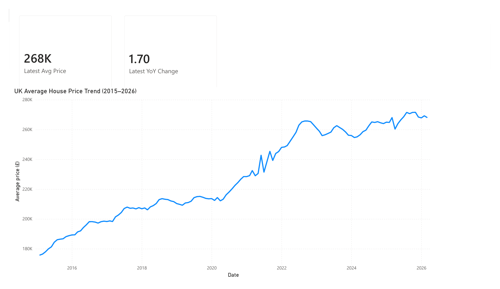
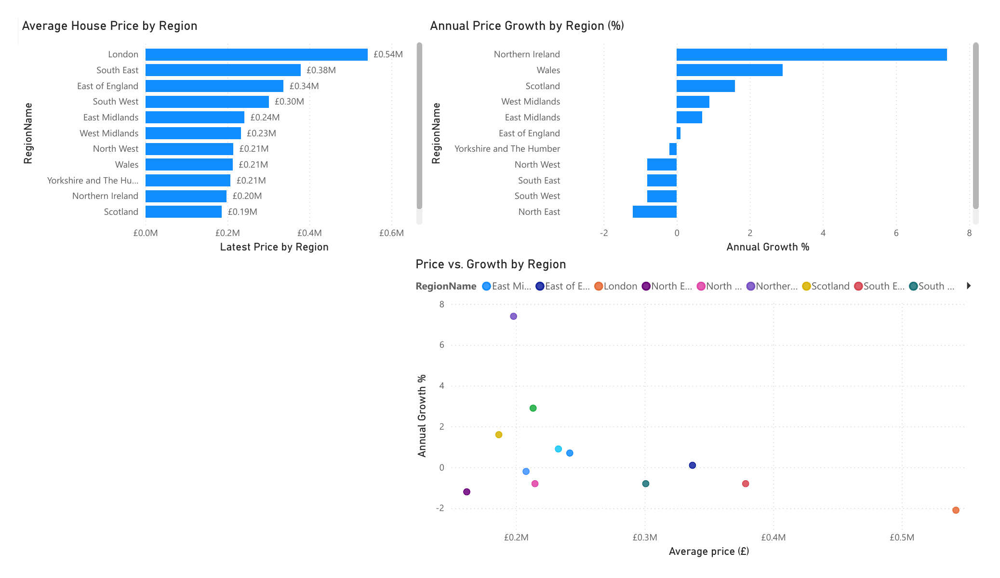
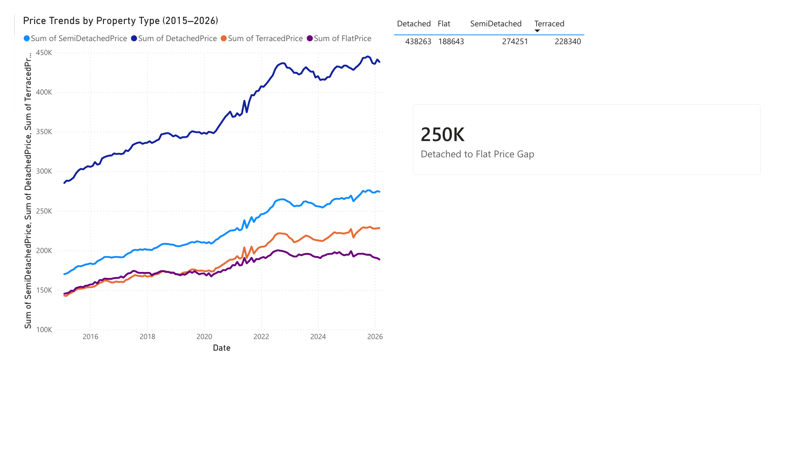
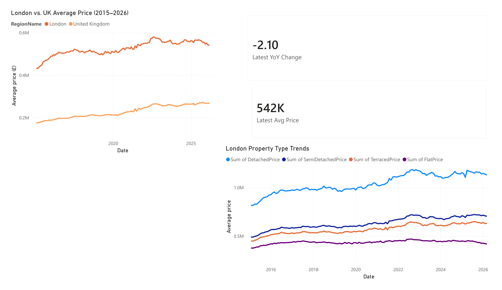

A four-page Power BI dashboard analysing UK house price trends since 2015, built from HM Land Registry's official UK House Price Index data — covering national trends, regional comparisons, property type breakdowns, and a London-specific deep dive.
House prices are one of the most-discussed economic indicators in the UK, but headline national averages hide a lot of variation. I wanted to build a dashboard that could answer a more useful question than "are prices going up": which regions and property types are actually driving the market, and where do the popular narratives (London always leads, prices only ever rise) break down.
I set myself the goal of building this end-to-end — sourcing raw government data, cleaning it, writing my own DAX measures, and reaching real conclusions, rather than plotting a dataset that was already analysis-ready.
London is the only UK region currently seeing year-on-year price decline, despite having by far the highest average price (£542K).
The fastest-growing region in the UK, despite being one of the cheapest — the inverse of the London pattern.
The gap between average detached house prices and average flat prices nationally, and it has widened noticeably since 2020.
London's price premium over the national average peaked around 2020–2021 and has compressed since, as growth elsewhere caught up.
Headline UK average price, latest annual change, and the full price trend since 2015.

Ranks all 12 UK regions by price and by growth rate, then plots both together to surface regions that are cheap-and-growing versus expensive-and-stalling.

Tracks detached, semi-detached, terraced, and flat prices separately, revealing how the gap between property types has changed over time.

Compares London directly against the UK average and breaks down London's own property type mix.

Sourced the data. Downloaded the full UK House Price Index file directly from HM Land Registry (~150,000 rows: monthly data, every UK local authority and region, back to 1995).
Cleaned it in Power Query. Trimmed to the 12 relevant columns, filtered the date range to 2015 onward for a focused 10-year view, and renamed fields for clarity.
Wrote custom DAX measures. Standard aggregations (Sum, Max) don't correctly answer "what's the latest value" in a monthly time series, so I wrote CALCULATE + LASTDATE measures. I also caught and fixed a data quirk where the most recent month's YoY figure is a placeholder 0 (provisional data not yet finalised) — my measure finds the latest genuinely non-zero value instead.
Designed four report pages moving from national headline numbers down to regional comparison, property type analysis, and a London-specific view — each with its own visual filtering logic.
The full .pbix file and underlying data source are available on request or via GitHub.